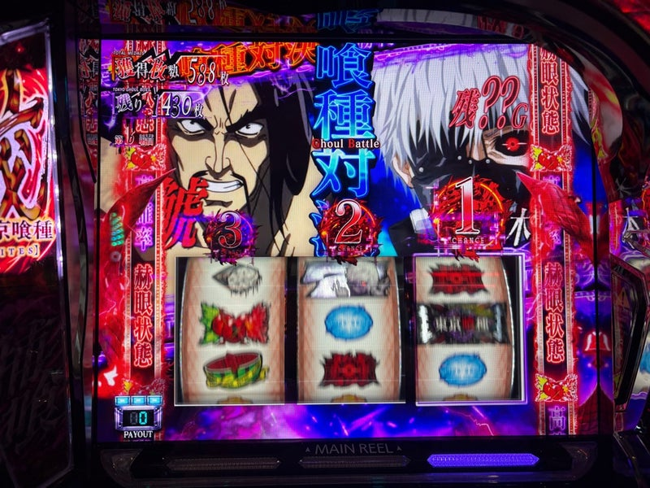
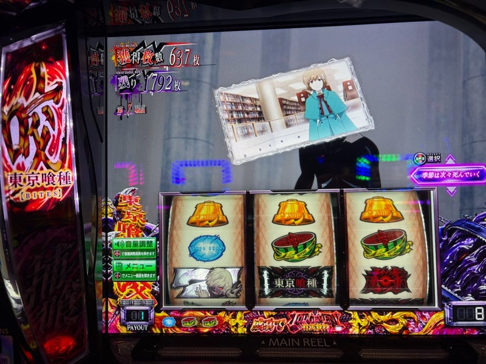

実戦の3場面
1．直撃と金画面。そして写真のない「666枚」
朝イチは、当時天国と判断した区間でCZを拾うも失敗。テンションDown。次の当たりは、まさかのAT直撃でテンションUp！ 銅トロフィーも出現し、当時は設定1否定と判断しました。
ところがATは駆け抜けばかり。金の終了画面を見て設定4・5・6を確信し、粘れる状況だと思ったものの、ほぼ単発が続いて心が折れそうでした。
そして、写真を撮れなかったのですが、AT中に666枚獲得画面が登場。
「ホントに！？ 残っていた1台に設定6が入っているの！？」
まさかの展開に大混乱です。挙動だけを見ていると、正直「これ本当に設定6か？」と疑ってしまうくらいでした。
2．裏ATは伸びず、赫眼70Gで一気に景色が変わる
途中で裏ATも引きました。自身2回目で、初回は約200枚、今回も約800枚で終了。期待していたほど伸びず、意気消沈です。別の場面ではCCGの死神に成功して300枚を乗せましたが、その後に裏ATには入らず、こちらも伸ばせませんでした。
原文ではこの辺りの順番が前後しています。裏ATへの入り方も、本文は「直撃から」、履歴は「引き戻し→裏」となっているため、当選経路は断定せず残しています。
その後、AT中の赫眼状態でとんでもないことが起きます。赫眼中にもう1回赫眼を取り、50Gと20G、合計70G継続させました。

さらに、赫眼を終えた時点の残り枚数は1,792枚。これはヤバイ。東京喰種の爆発力を、ようやく体感できました。

そこから完走が確定し、初めてのエンディングへ。ようやく「ぶっ壊した」と思える瞬間でした。

3．完走後にCZスルー。約2,000枚を使って終了
嬉しかったのですが、本日2回目のCCGの死神は失敗。それでも引き続き打ち、しばらくは軽い当たりを繰り返していました。
そこから突如として大ハマリ。CZには当たるのに、失敗が続きます。設定6でも、持ちコインを約2,000枚使う展開になりました。
ようやく上位CZからATに入っても駆け抜け。その後のAT直撃も単発。21時を越えたところで、これ以上の初当たりを追う気持ちがなくなり、終了です。